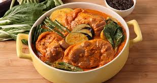

|  | Kare-kareThis perennial Filipino favorite usually starts with a base of oxtails, beef stew cuts, pork hocks or tripe. |
Ingredients2 1/2 lbs Pork or Beef hocks or Ox tail, cut into 2"lengths 6 tbsp peanut butter 1 bundle sitaw or long beans (cut 3" length) 2 bundles bokchoy/pechay 2-6 cloves garlic, minced 1 medium onion, sliced 1 tsp achuete powder for coloring 1 medium eggplant (cut into 6 peices) 1 tbsp fish sauce bagoong or shrimp paste | |
| <<< Back to Main Dish | |